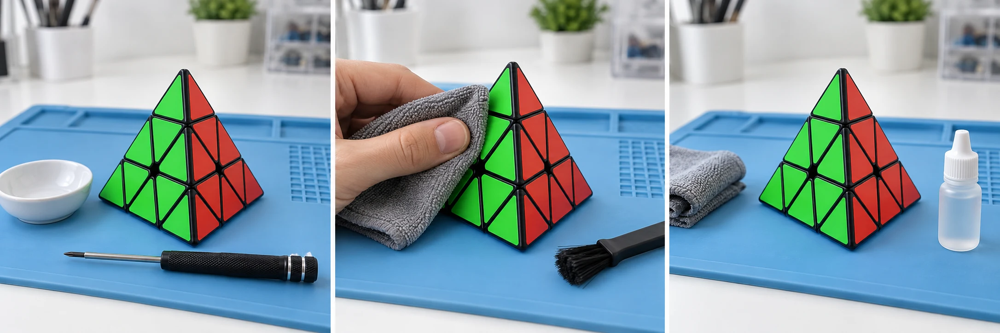

Entretiens les petites pointes, les arêtes et les axes de rotation de ton Pyraminx. Garde les pièces repérées pour nettoyer la pyramide sans forcer son mécanisme.
20 à 30 minutes 6 étapes Démontage selon le modèle
Avant le premier geste
Sur ton établi.
Un espace propre et bien éclairé. Les petites pièces vont dans la coupelle.
Les pointes et les réglages ne s’ouvrent pas de la même manière sur tous les Pyraminx. Vérifie la notice du modèle avant de démonter une pièce. Le temps indiqué est une estimation, hors séchage.

Avant le premier gesteIllustration générée · Vue extérieure
Étape 1 / 6
Le démontage
Repérer les pointes amovibles
Notice du modèle + photos de référence
Le Pyraminx possède quatre petites pointes qui tournent indépendamment des parties principales. Commence avec la pyramide résolue et photographie les couleurs.
Retire une pointe uniquement si la notice décrit cette manipulation. Repère sa position et conserve à part les éléments de réglage éventuellement accessibles.
Retire les pièces principales uniquement dans l’ordre prévu pour ton modèle. Le puzzle associe des arêtes, des pièces autour des axes et les petites pointes.
Range chaque famille séparément et prends une photo avant de toucher aux axes ou à un réglage. Limite le démontage aux pièces nécessaires pour le nettoyage.
Le nettoyage extérieurIllustration générée · Vue extérieure
Étape 3 / 6
Le soin
Nettoyer et sécher les pièces
Chiffon microfibre + brosse souple
Essuie les pièces avec un chiffon doux. Une brosse souple permet d’enlever la poussière et les résidus de lubrifiant dans les zones accessibles.
Si la notice le permet, utilise un chiffon à peine humide avec un peu de savon doux sur le plastique. Ne trempe pas les pièces magnétiques.
Essuie les pièces, puis laisse-les sécher complètement avant le remontage. Nettoie les axes et les parties internes au chiffon sec ou au coton-tige.
Nettoyer avant de lubrifierIllustration générée · Vue extérieure
Étape 4 / 6
Le soin
Lubrifier les zones de contact
Facultatif
Lubrifiant spécial puzzle compatible
Si nécessaire, applique une petite quantité de lubrifiant compatible avec le Pyraminx sur les zones de contact propres et sèches prévues par le fabricant.
Respecte le dosage du produit. Tu le répartiras en tournant les parties principales et les pointes après le remontage.
Après le remontageIllustration générée · Vue extérieure
Étape 5 / 6
La remise en route
Remonter le Pyraminx
Pièces repérées + photos de référence
Replace les pièces principales dans l’ordre indiqué par la notice, puis remets les pointes si tu les as retirées.
Vérifie les couleurs et l’orientation des pièces avec tes photos. Restaure les réglages que tu as éventuellement modifiés avant de refermer le puzzle.
Le contrôle finalIllustration générée · Vue extérieure
Étape 6 / 6
La remise en route
Contrôler les pointes et les axes
Ton Pyraminx remonté
Fais tourner doucement les quatre petites pointes, puis les parties principales de la pyramide.
Les mouvements doivent être fluides et réguliers, sans blocage. Ajuste un réglage uniquement si la notice le prévoit et retrouve d’abord sa position d’origine.
Étape 1 sur 6
Illustrations générées pour CubeMaster : elles montrent un Pyraminx intact et son entretien extérieur, pas un démontage documenté. Pour les pièces internes et le remontage, suis la notice de ton modèle et tes propres photos.
Les bons réflexes
Questions fréquentes sur le nettoyage du Pyraminx.
Nettoyage, séchage et lubrification.
Peut-on nettoyer un Pyraminx sans le démonter ?
Oui. Essuie les faces avec un chiffon microfibre et retire la poussière accessible à la brosse souple. Un démontage n’est utile que pour l’entretien intérieur et doit suivre la notice exacte de ton modèle.
Faut-il retirer les quatre petites pointes ?
Non, pas systématiquement. Certaines pointes donnent accès aux réglages, mais leur retrait dépend du modèle. Enlève-les uniquement si la notice explique comment faire, et repère leur position. Ne tire jamais sur une pointe qui résiste.
Peut-on passer le Pyraminx sous l’eau ?
Ne trempe pas la pyramide assemblée. Si la notice le permet, un chiffon à peine humide suffit sur le plastique ; garde les parties métalliques au sec et ne trempe pas les aimants. Laisse sécher complètement avant le remontage.
Quel lubrifiant utiliser pour le Pyraminx ?
Utilise un lubrifiant spécial puzzle compatible avec le modèle, en petite quantité sur les zones de contact indiquées. Tourne doucement les parties principales et les pointes une fois le puzzle remonté. Évite les huiles domestiques et le WD-40.
Pourquoi une pointe ou un axe bloque-t-il après le remontage ?
Vérifie d’abord la position de la pièce et le réglage que tu as éventuellement modifié. Un excès de lubrifiant ou des résidus peuvent aussi gêner la rotation. Si le problème persiste, consulte la notice et ne force pas le mouvement.